Nibras-NX is our integrated asset management platform — four solution domains built on the same Lean-engineered foundation, from wellhead to boardroom dashboard.
Wells
E‑Well Book
Unparalleled Flexibility for Data Integration
NIBRAS-NX E-WellBook collects all your corporate data stored in different applications in one interactive visualization layer. The electronic well book is the Single Version of the Truth that allows your engineers to collaborate and focus on analyzing a problem rather than searching for the data. The tool assigns ownership to your structured and unstructured data as well as interacts with models to simulate different scenarios.
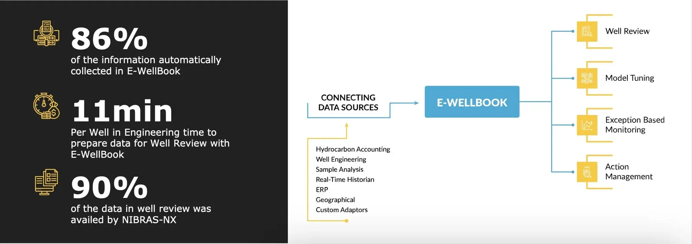
Advanced Features
Interactive visualization of deviation data, interaction log, etc.
Historical analysis on advanced trending functionalities
Real time data trends overlayed with events data
Visual well operating envelopes
Observation logging
Action management through human workflows
Defined data ownership
Physical model integration with scenario simulations (Petex's Prosper, Weatherford's Lowis, extendable with custom adaptors)
Data driven model integration (Production Universe)
PDF data reporting for each well review for future reference
Customisable visualisation by super users
Cloud or On-Premise hosting
Supported Data Types
Real-time Data Historian
Relational data (Oracle or SQL)
Unstructured data
Restful API's
GIS
SharePoint
Excel Files
Note: Architecture is open to create custom adaptors to connect to your proprietary applications.
iNNOVATEQ commits to a successful deployment of your DX roadmap
Standard Well Data Visualization
Basic Well Status Information
Well Test and Production History
Completion and Artificial Lift Data
Deviation Survey Data
Geological Maps and Formation Data
Well Logs
Reservoir Fluid Data
Production Chemistry
Well Integrity Data
Well Intervention and Maintenance Records
Historical Drilling Records
Real-time Data
Hydrocarbon Accounting Data
Sample Management Data
ERP
Virtual Metering
25 Years Experience Embedded in a Virtual Metering Tool with Asset Wide Optimization Capabilities
NIBRAS-NX Virtual Metering solution is a machine learning application that runs data driven models to provide real time oil, water and gas estimates for all your wells every 30 seconds. These measurements are reconciled to the export meter so that observed production losses can be tracked down instantly. The tool is designed to deal with poor quality data and is a foundational component for the asset wide optimiser.
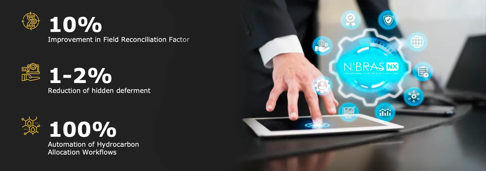
Advanced Features
Topology layout with sub stations
Upstream browsing
Automatic Header switching
Auto Loading of well tests
Well Test Auto Clipping
Well Test Screening and Validation
Well Data Modelling screen
Deliberate Disturbed Well Test Support
Test by Difference Support
Poor data quality support
Fall back models
Data Pre-Processor functions
Reconciliation to export meter or fiscal meter
New production rates every 30 seconds
Realtime deferment tracking
Linear/Exponential Decline model support
Model Sensitivity Analysis
Model Constraints
Supports Injectors and Producers wells
Covers all standard well types (Natural Flowing, ESP, PCP, Gas Lift, Gas, Multi-Zonal, Beam Pump, Gas Injector, Water Injector, etc.)
Supported Interfaces
OSI PI and OPC UA for real time data
HCA integration for well test data
Prosper interface for initial well design
CSV files for simulation data
Registered IP 'Production Universe' developed by Shell Global Solutions and commercialized by iNNOVATEQ
Standard Well Data Visualization
Network Visualization with well status
Real time trending capabilities on Export, Headers, Wells and Groups
Daily History Trends
Daily/Weekly/Monthly Reporting
Well Test Loading
Well Modelling Screen
Closed-In Pressure Buildup tracking screen
Fall back configurations
Reporting and Diagnostic builder
EBM for Wells
Ensure insights are generating business value
NIBRAS-NX Exception Based Management (EBM) solution will create a single task list for each user and tracks the actions taken in the field through human workflows to ensure the business value is realized. Service Level Agreements (SLA's) visualized in compliance dashboards enable the analysis of the health of your business processes. The platform supports very basic parametric and smart alarms but can also integrate with advanced model based, predictive or AI tools that are creating insights in advanced engineering tools.
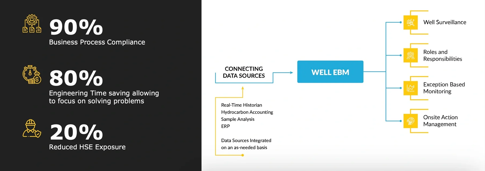
Advanced Features
Single task list bringing actions together from different systems
User assigned actions (or group for rotation positions)
Standard Operating Procedures embedded
SLA's
Requests actionable offline on the mobile version
Compliance dashboards
Action and Request History accessible
Comments in each step
Human workflow action review
Diagnostic plots for immediate trigger analysis
Events overlayed on real time data trends
Access to trigger logic to support continuous improvements
Integrated with E-WellBook for rich context generation (as necessary)
Integrated with data driven model (Production Universe)
Integrated with physical models (Prosper, Lowis)
Data Visualization
Task viewer
Andon Board
Diagnostic Plots
Request System
Human Workflow
Supported Well Types
Natural Flowing wells
Gas Lift wells
ESP wells
PCP wells
Beam pump wells
Gas wells
Cyclic Steam wells
Water Disposal/Injector wells
Gas Injector wells
Power templates are available but can be customized based on available data.
Verified result: 98% of 7,500 wells across 12 types are monitored by EBS in a documented deployment — read the case study.
P‑Q Curve
Optimizing gas production within your operating envelopes
Nibras-NX P-Q Curve solution is designed to manage gas well operating envelopes, monitoring and optimisation of the well performance and identification of the production issues related to liquid loading, erosion and productivity impairment.
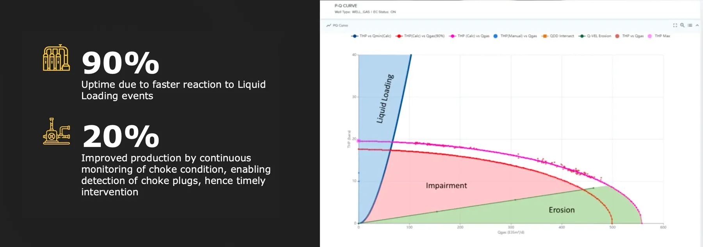
Advanced Features
Operating Envelope providing the functionality to define and update physics-based models of gas wells using P-Q Curve, Minimum Flow Rate Limit, Maximum Flow Rate Limit and Minimum THP Limit
Monitoring and optimization by enabling real-time well performance monitoring using production data
Liquid Loading Monitoring: automating liquid loading detection can help quickly act on liquid loading instances which can lead to increased gas production from the affected wells
Choke Performance Monitoring: implementing P-Q curve detection for choke plugs in gas wells allows continuous monitoring and early identification of issues, enabling timely intervention with acid cleaning and improving production
Exception based surveillance using built-in Nibras-NX functionality can be applied to the model parameters using the operating envelopes to detect events related to liquid loading, erosion and productivity impairment
Data Visualization
P-Q Curve: gas well performance curve at surface conditions, a combination of vertical lift performance (VLP) and inflow performance relationship (IPR)
Minimum Flow Rate Limit: minimum gas flow rate to avoid liquid loading
Maximum Flow Rate Limit: maximum gas rate to avoid tubing erosion
Minimum THP Limit: minimum well operating THP to achieve optimum gas flow rate for a given maximum drawdown
Supported Interfaces
Real-time Data Historian
Allocation Database
Relational data (Oracle or SQL)
Unstructured data
Restful API's
GIS
SharePoint
Excel Files
Note: Architecture is open to create custom adaptors to connect to your proprietary applications.
Well Test Planning
Automated Well Testing plans generated from regulatory requirements
Nibras-NX offers end-to-end Well Testing Compliance package which automatically generates a well testing plan for the month based on local regulations that defines testing frequencies based on certain conditions such as production rate. At the same time the tool allows to show other well testing activities been done for operational reasons such as work overs.
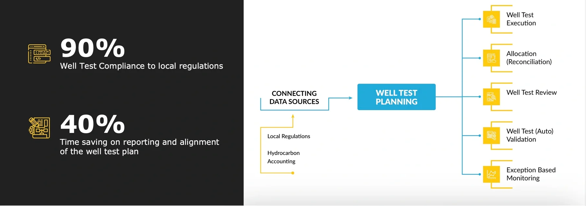
Advanced Features
Automatic generated well test plans based on test frequencies set by production rates (and/or other conditions)
Taking Ad-Hoc tests into account and shifting the times accordingly
Compliance dashboard against original plan at any moment during the month
Historical COP compliance grouped by stations to analyse local constraints on testing capabilities
Well testing results overview of the planned well tests and their deviation from the history
Well Test statistics of total number of well test categorized by validation status
Compliance target tracking
Report generation based on the hierarchy selection with the option of execution on different levels of the organization
Historical reports on test compliance against original plan
Supported Interfaces
Energy Components or any other Hydrocarbon Allocation System
Note: Architecture is open to create custom adaptors to connect to your proprietary applications.
Note: Local regulations tend to have slight deviations, so there will be customizations to ensure that the reporting is done in line with the set KPI's.
Data Visualization
Well Test Plan per month
Well Test Results according to Plan
Overview charts for test compliance
Analysis chart for additional ad-hoc testing
Analysis statistics for test execution and validation
Tabular test compliance by station
On the desk training for personalised issues
Transfer to Support
Training for support staff
Regular governance boards for continuous enhancements
Deliverables
Platform deployment with basic infrastructure requirements (User/Role Access, data access, process compliance, etc.)
Functional requirements documentation for solutions
Digital solutions deployed on Nibras NX platform
Platform and solution training
Low code support tools
User manual and project documentation
Well Test Control
NIBRAS-NX Well Test Control will extract from the well test planning tool a well test schedule per test unit and pass it on to the control system for execution. The operator is enabled to intervene and change the schedule based on operational requirements which will also feedback in the well test compliance management tool.
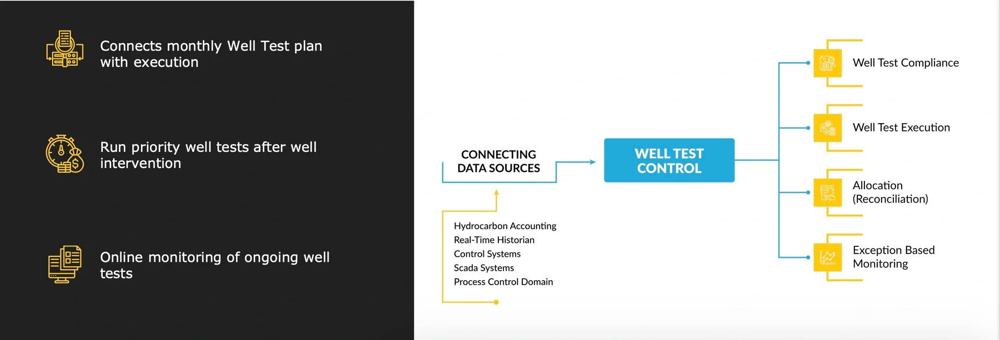
Advanced Features
Integration with monthly plan; assignment of well test sequence per test unit
Integration with 3rd party control system (DCS or Weatherford Lowis) to execute control
Communication of densities for net oil computer calculation
Setting of purge and test times
Running priority well tests after wells have had an intervention
Integration with deferment system to skip wells from the well test sequence
Integrated in human workflow for any update to the sequence
Supported Data Types
Real-time Data Historian
Relational data (Oracle or SQL)
Unstructured data
Restful API's
GIS
SharePoint
Excel Files
Note: Architecture is open to create custom adaptors to connect to your proprietary applications.
Standard Well Data Visualization
Well Test Status report
Well Test Control screen to start sequence and run priority tests
Test Unit Overview screen to see running units
Test Unit status screen with online trends of test unit and wells
Well Test History report to see completed well test history
Well Test Review
Well Test validation embedded in a rich data review process
NIBRAS-NX Well Test review is a mini review process which allows you to manually validate all your available well tests at once and select the most accurate for acceptance to comply with your well testing regulations. Better well test selection will also improve reconciliation factors and increase accuracy of model matching workflows.
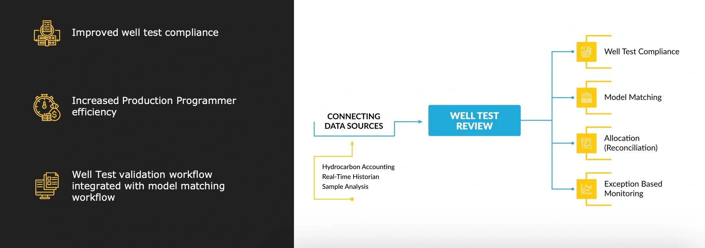
Advanced Features
Review full list of available well tests including validated well tests
Lock well test status when used for months allocation purpose
Clipping of well tests for removal of unstable well test time windows
Review of well and test unit parameter real time data within one comprehensive overview with well parameter list dynamic based on well type
Updating of well test results used mostly to enter sample data such as water cut
Real time data trends overlayed with events data
Observation logging
PDF data reporting for each well review for future reference
Supported Data Types
Real-time Data Historian
Relational data (Oracle or SQL)
Unstructured data
Restful API's
GIS
SharePoint
Excel Files
iNNOVATEQ commits to a successful deployment of your DX roadmap
Note: Architecture is open to create custom adaptors to connect to your proprietary applications.
Standard Well Data Visualization
Well Test history per well
Real time Test Unit Trends
Real Time Well Parameter Trends
Well Testing details
Variation Calculation for data updates
Hydrocarbon Accounting Data
Sample Management Data
Well Test Auto Validation
Enhances your focus on wells with changing operating conditions
NIBRAS-NX Well Test Auto validation is an algorithm which will validate well tests that are in-line with the well history and hence confirmed to run stable. This allows your engineers to focus on the wells that are changing behavior and do a more in-depth human analysis.
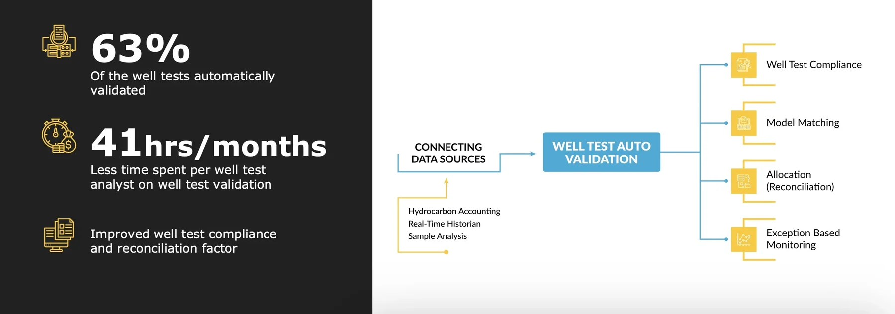
Advanced Features
Those wells which are not showing a behavioral change compared to their own history will get an updated well test validation status (either accept or reject)
Those wells which are changing behavior compared to their own history will be scheduled for a manual validation
Validation algorithm based on booked deferments, well test duration, pump efficiency, BSW history, gross history and oil history
For those wells which are validated, the updated well test status can be seen in the hydrocarbon allocation system
Supported Data Types
Real-time Data Historian
Hydro carbon Allocation system
Sample data
Well and Test Unit Parameters
Standard Well Data Visualization
This tool is an algorithm that is running in the background usually once or twice per day.
Integrated with human workflows to request for manual well test
Integrated with human workflows to do manual well test validation in case auto validation is uncertain
Note: Architecture is open to create custom adaptors to connect to your hydrocarbon allocation system and data historian.
Reservoirs
E‑Pattern Book
Portfolio Overview of Reservoir Pattern Performance at a Glance
NIBRAS-NX E-PatternBook provides valuable insights into the reservoir performance to the reviewers. It allows engineers to quickly access and analyze the data related to the historical reservoir pattern performance, such as injection and production rates, reservoir pressure trends, voidage and IVRR. This information helps to identify opportunities for production optimization and make informed decisions about well and reservoir management.
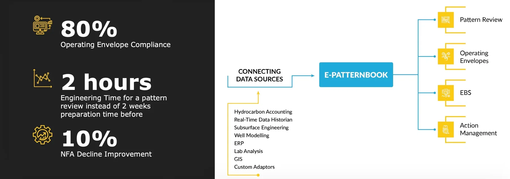
Advanced Features
Pattern Configuration Wizard
Pattern Health and Ranking
Completion Matrix
Pattern Correlation Panels
Reservoir Voidage and IVRR
Hall Plots
Integration of Reservoir Simulation Model Data
Quick Links to E-WellBook
Pattern Review Audit Trail
Management of Threats and Opportunities
Action Tracker
Supported Data Types
Real-time Data Historian
Allocation Database
Relational data (Oracle or SQL)
Unstructured data
Restful API's
GIS
SharePoint
Excel Files
Note: Architecture is open to create custom adaptors to connect to your proprietary applications.
Reservoir Data Visualization
Reservoir Pattern Status Information
Operating Envelope
Reservoir Connections
Production/Injection and Reservoir Pressure History
Reservoir Maps
Well Logs
Fluid and Production Chemistry Data
Reservoir Analytics Data
Reservoir Simulation Model Data
Operating Envelope Limits and Settings
EBM for Water Flooded Reservoirs
Ensure insights are generating business value
NIBRAS-NX Exception Based Management (EBM) solution will create a single task list for each user and tracks the actions taken in the field through human workflows to ensure the business value is realized. Service Level Agreements (SLA's) visualized in compliance dashboards enable the analysis of the health of your business processes. The platform support very basic parametric and smart alarms but can also integrate with advanced model based, predictive or AI tools that are creating insights in advanced engineering tools.
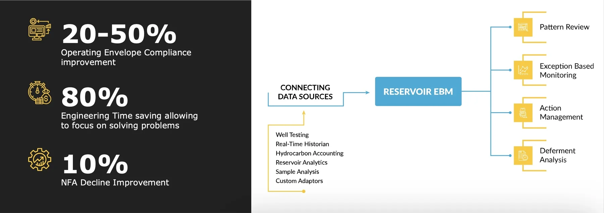
Advanced Features
Single task list bringing actions together from different systems
User assigned actions (or group for rotation positions)
Standard Operating Procedures embedded
SLA's
Requests actionable offline on the mobile version
Compliance dashboards
Action and Request History accessible
Comments in each step
Human workflow action review
Diagnostic plots for immediate trigger analysis
Events overlayed on real-time data trends
Access to trigger logic to support continuous improvements
Integrated with E-PatternBook for rich context generation (as necessary)
Data Visualization
Task Viewer
Andon Board
Diagnostic Plots
Request System
Human Workflow
Supported Reservoir Types
Depleted reservoirs
Water flooded reservoirs
Gas flooded reservoirs
WAG reservoir
Power templates are available but can be customized based on available data.
Verified result: reservoir performance analysis time cut from 2 weeks to 2 hours, with a 20–50% improvement in waterflood operating‑envelope compliance — read the case study.
Facilities
Energy & CO2 Emission
Your energy losses ranked and visualized in dollars
Nibras offers a comprehensive energy and CO2 emissions monitoring solution that utilizes "Follow the Money" approach, integrating seamlessly into human workflows, employing exception-based management, and providing detailed reporting capabilities. By becoming integrated, multi-disciplined, standardized, and "Smart," Nibras enables early threat and opportunity identification, prioritization and mitigation seamlessly integrated to its existing equipment monitoring solutions.
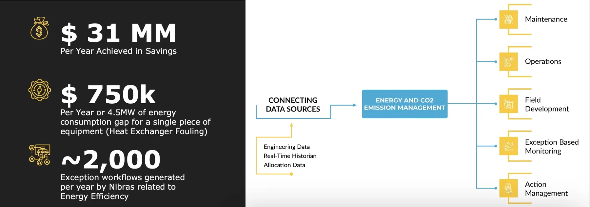
Advanced Features
Energy and CO2 emission EBM seamlessly integrated to other EBM logic
Definitions and democratization of operating envelopes and operating windows according to your organization's conventions, where changes create an audit-trail
Deployment consultancy support to help establish competitive, yet achievable targets
Automated KPI tracking system
Automating the assignment of actions related to the relevant roles
Accessibility of exceptions, diagnostic plots, and historical actions in one system
User assistance in resolving Energy Efficiency gaps identified by having SOP's attached for each of the types of exceptions generated by Nibras
Implementation of 'Follow-the-Money' approach, whereby each energy efficiency opportunities and threats are automatically translated into a dollar value by Nibras
Automated classification of energy efficiency components by their 'driver' (e.g. Flare, Operational, Structure, Maintenance)
Capex intensive opportunities and threats can be transferred into the Nibras-NX MTO Module
Visualization Tool
Diagnostic Plots
Energy and CO2 Emission Reports per Equipment Type
Dashboards by 'Energy Driver'
Andon Board (Business Process Monitoring Tools)
Energy Emission Dashboard
"Bad Actors" Report
Equipment Types — Power Templates
Compressors
Pumps
Flares
Heat Exchangers
Blowers
Furnaces
HSRG/OTSG
Columns
Deployment Approach
Shortlist equipment relevant to Energy Efficiency Monitoring
Define Energy Drivers
Select Equipment Parameters required to be monitored
Align on target values
Automate Gap calculations
Generate visualisations for the new data generated
Operator Standard Work
Built, Operate and Transfer to your support organization to continuously adapt to your future
Deployment Services are intended to efficiently deploy all digital solutions in the Dx roadmap on the NibrasNX platform using low code deployment tools. Experts focus on business logic while commodity tasks such as labor-intensive data mapping is institutionalized in your support organization. By gradually transferring the ownership of the deployment to your organization, we ensure the continuous improvement culture is supported and we allow you to achieve your local content requirements.
Typical Corporate Challenges
70% of the time is spent on mapping data
Different tools use different data sources for the same information
Solutions cannot be customized to your needs
Performance issues when scaling
Tool is not embedded in your work process
Experts needed to deploy solutions
Key Activities
Business Process Standardisation (Business Transformation Services)
Acceptance Testing
Classroom training
Factory acceptance testing per solution
Site acceptance for each asset replication
Prioritized feature register for continuous improvement
Intensive Support
On the desk training for personalised issues
Transfer to Support
Training for support staff
Regular governance boards for continuous enhancements
Deliverables
Platform deployment with basic infrastructure requirements (User/Role Access, data access, process compliance, etc.)
Functional requirements documentation for solutions
Digital solutions deployed on Nibras NX platform
Platform and solution training
Low code support tools
User manual and project documentation
Permit to Work (PTW)
Digital PTW to ensure the work is done on the right location
NIBRAS-NX PTW supports both desktop as mobile applications and workflows. Work Permits can be raised directly from a mobile device, and synched back to the back-end servers once connected to the network.
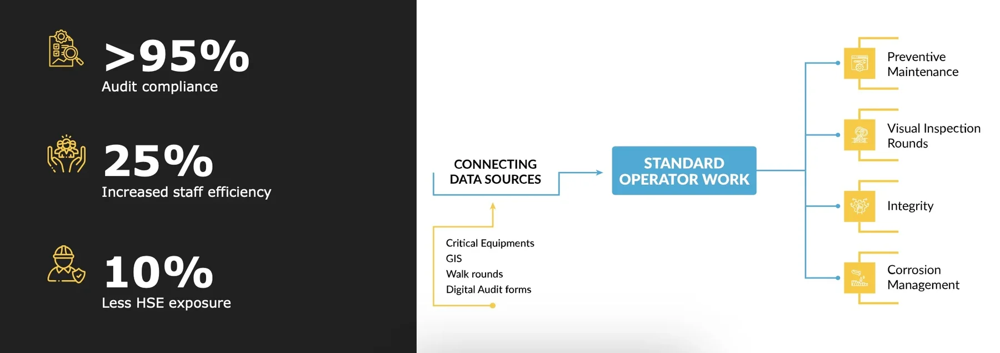
Advanced Features
Offline capabilities
Request Outbox
Enabled on Android and iOS
Encrypted server data communication
User based login
Camera Access for picture upload
Voice note recording part of audits
Auto Location tracking on workflow submission
Human workflow actions
Task listing
Future task scheduling
Multiple user profiles and roles for personalized views
Advanced task filtration capabilities
Compliance dashboards
Supported By
Android / iOS / Web support
Zone EX1 and EX2 tables support
MDM integration (Device Management)
Secured application access
SQL Lite data caching
Integrated network diagnostic
Note: Architecture is open to create custom adaptors to connect to your proprietary applications.
Standard Available Workflows
Permit to Work checklist
Note: Data visualization can be customized based on available data.
Asset Management
Limits Diagram
Understanding your network constraint to focus your efforts
NIBRAS-NX Limit Diagrams (LD's) a.k.a. Choke Diagrams, visualize available capacity on different components of your integrated system. The daily LD's enable operational optimizations towards daily production constraints, while monthly LD's visualize capacity constraints due to reliability issues, and the future LD's will highlight constraints due to PVT changes which would require CAPEX for additional capacity.
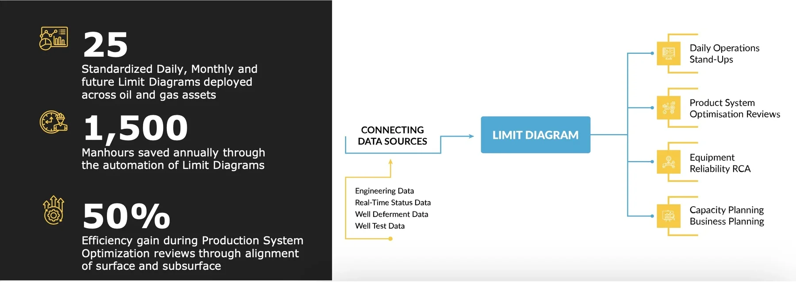
Advanced Features
Conversion of capacities to Oil, Water and Gas equivalents
Simulations for different BSW and GOR
Manual entered reconciliation factor
Production target and actual production visualized against available capacity
Equipment capacity calculated from Live Operating Envelopes
Visualization of unavailable capacity due to deferments and planned maintenance
Visualization of optimization capacity from optimizers
Historical visualization of constraints
Equipment reliability calculations for monthly limit diagrams
Supported Data Types
Equipment engineering data
Real-time status data
Well deferment data
Well test data
Equipment reliability
Standard Data Visualization
Live Limit Diagrams based on real time status data
Daily Limit Diagrams for operational optimizations
Monthly Limit Diagrams for reliability optimizations
Future Limit Diagrams for capacity increase
Historical analysis of production targets and available monthly capacity
Threats and Opportunities Register
Centralized collection and execution of highest risk threats or value opportunities
NIBRAS-NX Threats and Opportunities Register combines surface and subsurface activities to mitigate threats and realize the highest value opportunities through an end-to-end maturation workflow. Automated prioritization is done as a result of the scoring generated by the workflow's built-in Risk Assessment Matrix or Benefit Assessment Matrix.
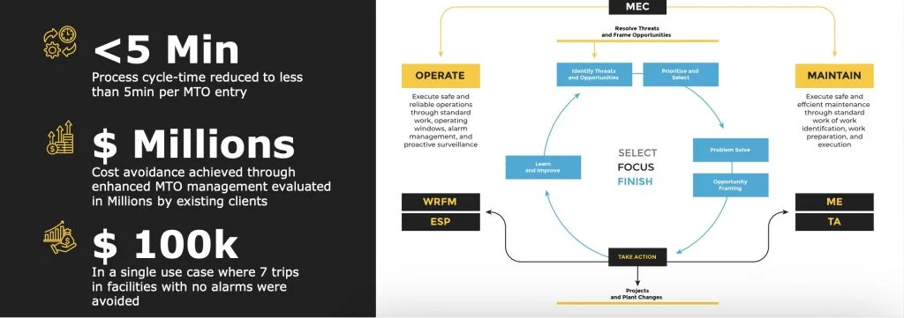
Advanced Features
Standardized process to ensure the execution of threat and opportunity across organization
Ranking and categorization of entire T/O portfolio management register
Inbuilt RAM and BAM concepts to prioritize the right request for execution
Benefit capture standardization and automation
Human process with decision gates digitized
Embedded evaluation process (pause and check process)
Stage wise progress tracking
Digitization of the problem-solving processes like 5CRQ & CLI
Advanced MTO module for CAPEX/OPEX intensive entries, and simpler 'opportunity register' tools for day-to-day management of low CAPEX/OPEX entries
Establishment of a clear line-of-sight on different users/roles responsible for the completion of the different MTO entry's child activities
Supported Data
Asset data
Risk assessment matrix
Cost analysis
Build to integrate with other registers
Standard Data Visualization
Single repository for all threats and opportunities
Tactical KPIs on landing page
Visualization of top 20 T/O across organization hierarchy
Standard Sankey Chart used to address required details in single widget
Effective visualization of due dates to monitor the progress
Widget to monitor recent T/O raised in last 2 weeks
Widget to monitor T/O related to flaring (saves time for dedicated which works for flaring)
Asset Performance Dashboard
From Strategic Vision to Daily Action: Uniting Data Sources for Comprehensive Asset Management Insights
The Nibras-NX Asset Analysis Report is a highly customizable solution that integrates data from multiple data sources, business processes, and automated KPI's. The dashboard seamlessly aggregates these information, providing Team Leads and Managers easy access to performance insights for their assets. The report can include production, injection, deferments, compliance with surface or sub-surface operating envelopes, HSE comments, GAS KPI's, well test compliance KPI's, huddle dashboard, hoist movements, planned activities, and links to limit diagrams or choke models as examples. Ultimately, these dashboards translate day-to-day operational activities into a comprehensive asset analysis report, showcasing a holistic 'snapshot' performance of the assets.
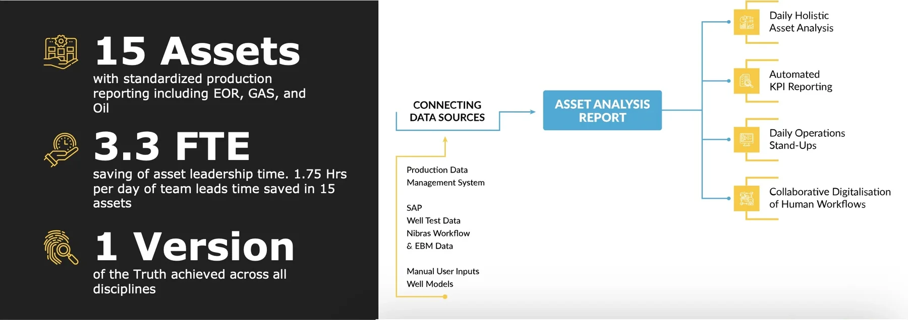
Advanced Features
Display total asset performance in a standard way for all assets achieving a Single Version of the Truth
Lean methodologies enablement to generate an optimum design which takes the various linked business processes into account
Eliminates time spent on gathering data, and instead spend time acting on data
Enable leaders to start from the identification of a production drop within the asset, all the way down to the root-cause of the production drop, and the ongoing actions being taken by their teams to address such issues
Further customization with hoist movements, HSSE notifications, change-of-shift notes, planned maintenance activities and more
Visualization of current actual production (Production Data Management System) overlayed against the targeted integrated production plan, monthly rolling average, year-to-date production target, and deferment targets — deferment can be color-coded according to deferment code
For waterflood reservoirs, injection data can be included
Exception based management automated compliance KPI's for surface and sub-surface which can be sliced-and-diced using the built-in Andon board or business process analysis dashboard
Links to relevant asset management applications and their KPI's (deferment analysis, management of threats and opportunities, well test compliance, activities overview, well restoration tool, and limit diagrams as examples)
Verified result: 3.3 FTEs saved across 15 assets, and 1.75 hours/day of team‑lead time saved per asset — read the case study.
Asset Wide Optimizer
Real-time optimization of well production while taking into account constraints at all levels
NIBRAS-NX Asset-wide Optimizer solution stands on the shoulders of the NIBRAS-NX Virtual Meter, bringing real-time optimization to wells and assets. It's data-driven model approach blends speed with flexibility in handling constraints at all levels (wells, pipelines, facilities), including compositional requirements (CO2, H2S, etc.).
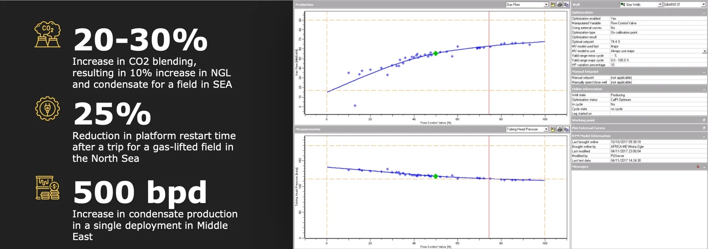
Advanced Features
Multiple well types can be optimized together
Constraints can be set at well, header and calibration point level
Supports back-pressure interaction between wells and pipelines/manifolds
Optimization objective is user-defined and can take into account cost (e.g. produced water treatment)
Optimization can be scheduled at fixed intervals (every 30 mins, hourly, once a day, etc.), triggered ad-hoc (e.g. compressor trip) or manually on-demand
Setpoints can be sent automatically to the field (closed loop) or used as advisory
Models are data-driven, using data from normal operational changes and require minimal maintenance
What-If analysis allows to test different setpoints and compare the results
Configuration of constraints and optimization criteria can be stored in scenarios and switched to when needed
Sweep optimization
Standard Well Data Visualization
Well optimization screen with constraints and optimizer results
Calibration point optimization screen with results for all wells and total flow rates
Sweep optimization over a range of constraints
Deferment Analysis
Understanding your losses is the first step towards optimization
NIBRAS-NX Deferment Analysis is a visualization chart where you can immediately spot the root cause of your biggest production losses. Whether they are in the same asset; have the same root cause; planned or unscheduled maintenance; or surface or sub-surface, this unified visualization will drive alignment in your organization to enhance asset wide optimizations.
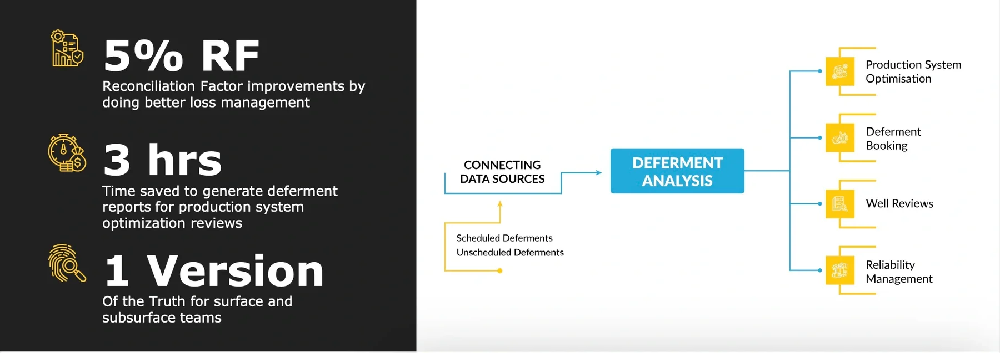
Advanced Features
Sankey Chart Visualization with groupings by: Surface/subsurface, Scheduled/Unscheduled, Assets, Production Stations and Deferment Codes
Pareto Analysis to show the cause of the highest losses
Historical analysis to visualize improvements throughout the history
Advanced filtering capabilities to support detailed analysis and understand the root cause of the issue
Roll up functionality to sum the total losses
Connected to hierarchical browsing to assess losses on different levels of your organization
Note: groupings are customizable based on the available data that is recorded in your loss management system.
Data Visualization
Sankey Charts
Pareto Analysis
Historical Analysis
Tabular loss records with filtration capabilities
Supported Interfaces
Energy Components deferments table
Any standard SQL / Oracle table with standardized groupings can be attached to the report
Proprietary loss management system exposing an API can have customized adaptors to retrieve the data
Verified result: 30,000 bbl/day of hidden deferment identified through automated workflows in one deployment — read the case study.
How it gets deployed
The platform is the engine. Here's how it lands.
Business Transformation, Deployment Services and Productization Services.